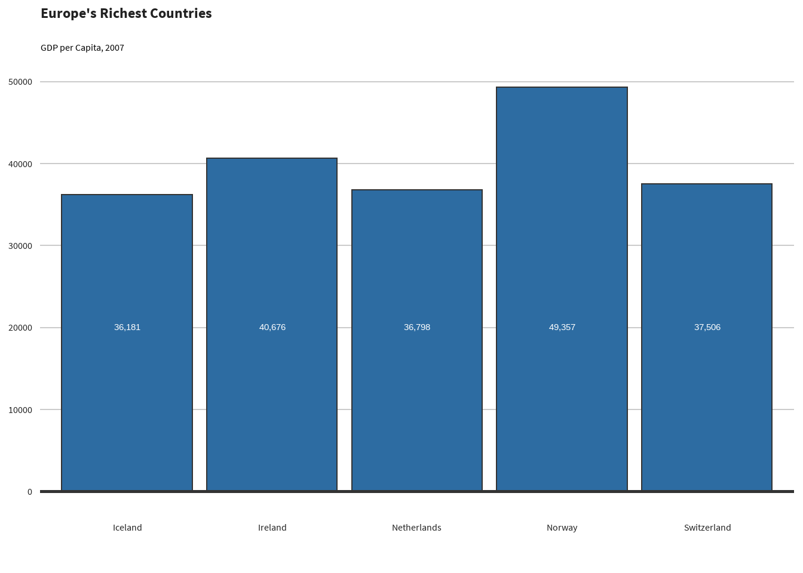
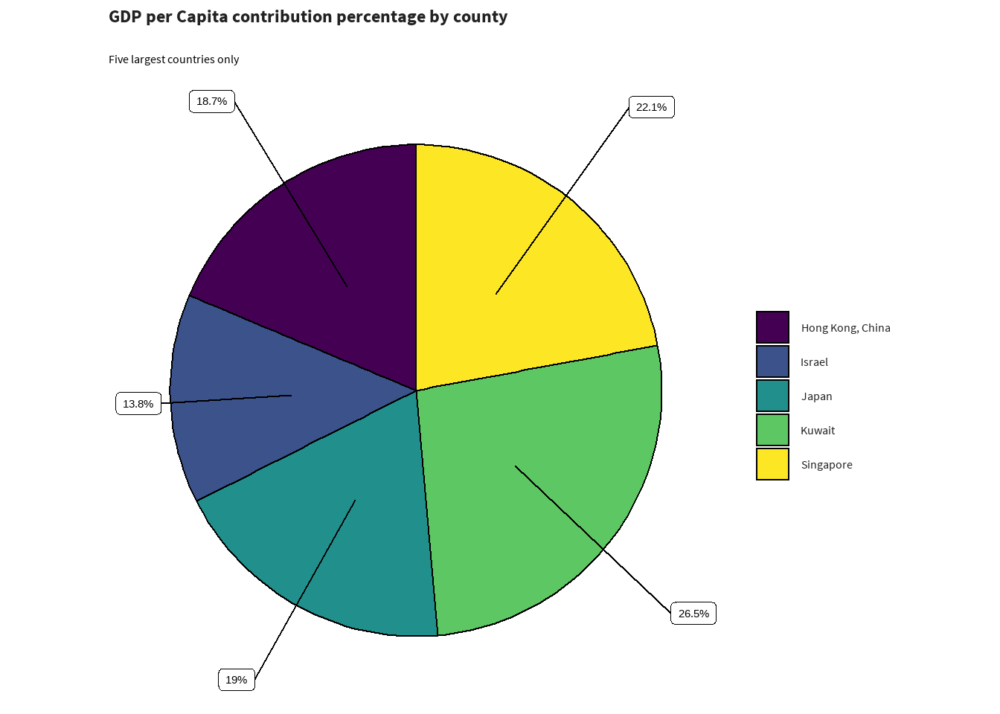
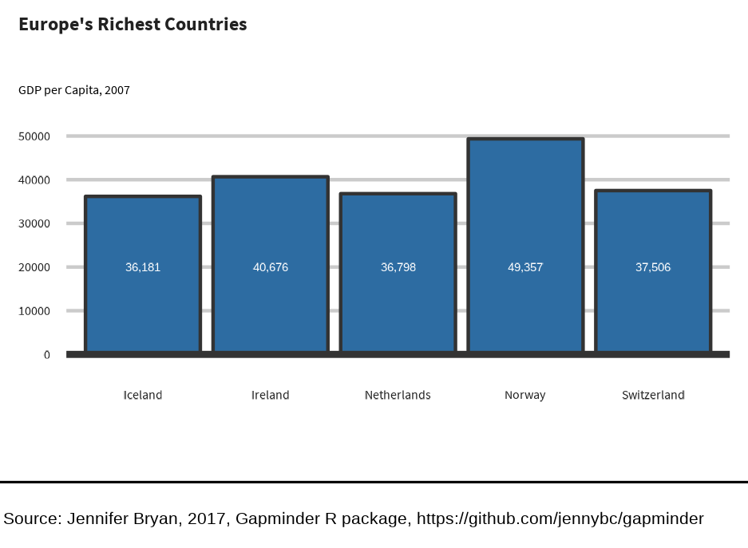

Make a barchart
library(ggplot2)
library(gapminder)
library(dplyr)
library(sccthemes)
barchart_data <- gapminder |>
filter(year == 2007 & continent == "Europe") |>
arrange(desc(gdpPercap)) |>
head(5)
scc_barchart(
barchart_data,
x = "country",
y = "gdpPercap",
title = "Europe's Richest Countries",
subtitle = "GDP per Capita, 2007"
)
Make a piechart
Example on how to make a pie chart, but why you shouldn’t
library(sccthemes)
library(gapminder)
library(dplyr)
asia_pop <- gapminder |>
filter(year == 1997 & continent == "Asia") |>
select(country, lifeExp, pop, gdpPercap) |>
top_n(5)
asia_pop$country <- forcats::fct_drop(asia_pop$country)
scc_piechart(
asia_pop,
asia_pop$gdpPercap,
asia_pop$country,
title = "GDP per Capita contribution percentage by county",
subtitle = "Five largest countries only"
)
Publishing your plots
To publish your work, so will need to save your plot. Saving plots in
ggplot2 can be a bit of a hassle, so we’re porting bbplot’s
finalise_plot() function. Some adjustments have been made,
for example we might not want a logo on every plot. Also, because this
package does not just deal with ggplot, I’ve renamed the function
finalise_ggplot(), to specify this is for
ggplot2 object only.
Once you have created your plot and are happy with it, you can use
finalise_ggplot() so that you can look at it outside
RStudio. Note that the position of the text and other elements do not
render accurately in the RStudio Plots panel, so saving it out and
opening up the files give you an accurate representation of how the
graphic looks.
Also you might want to use the same plot for different purpose: the
size of a plot in a presentation will need to be a different size from
one in a report. finalise_ggplot() allows for this without
having to change the original plot.
library(ggplot2)
library(gapminder)
library(dplyr)
library(sccthemes)
barchart_data <- gapminder |>
filter(year == 2007 & continent == "Europe") |>
arrange(desc(gdpPercap)) |>
head(5)
plot_to_save <- scc_barchart(
barchart_data,
x = "country",
y = "gdpPercap",
title = "Europe's Richest Countries",
subtitle = "GDP per Capita, 2007"
)
finalise_ggplot(
plot_to_save,
source = "Jennifer Bryan, 2017, Gapminder R package, https://github.com/jennybc/gapminder",
save_filepath = "inst/plots/publish_plot_example.png",
width_pixels = 225,
height_pixels = 165
)